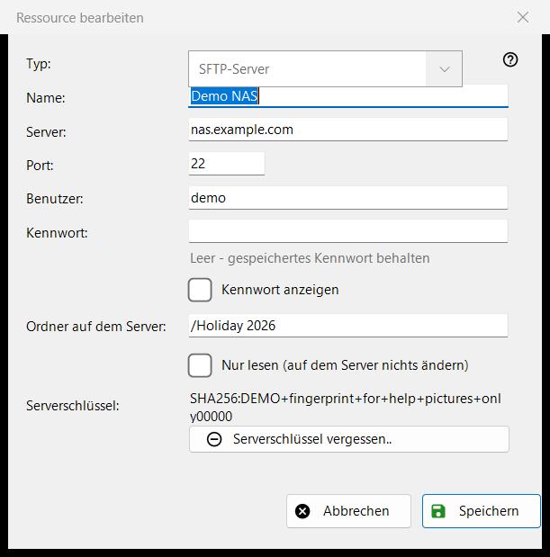
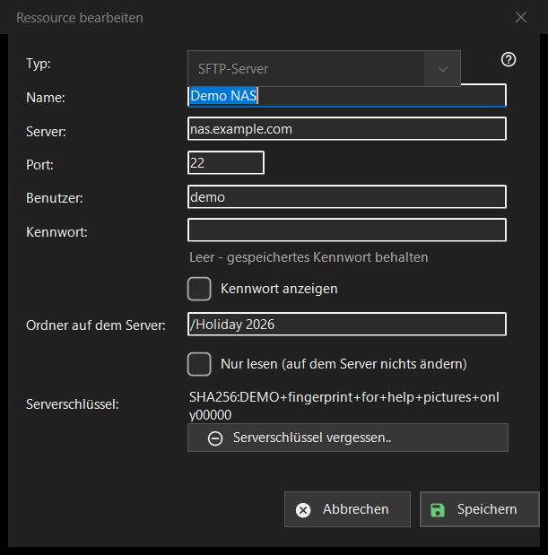

Ressource bearbeiten
Verwendungszweck
Das Formular einer gespeicherten Ressource, also eines Servers oder Netzwerkordners. «Hinzufügen..» in der Ressourcenliste öffnet es leer mit der Überschrift «Neue Ressource», «Bearbeiten..» öffnet es ausgefüllt als «Ressource bearbeiten», und eine im Ordnerfeld eingegebene sftp://-Adresse öffnet es vorausgefüllt.


In dieser Reihenfolge
- Wählen Sie den Typ: SFTP-Server oder Netzwerkordner (SMB).
- Geben Sie der Ressource einen Namen und tragen Sie Serveradresse und Port bzw. den Netzwerkpfad ein.
- Geben Sie Benutzer und Kennwort ein.
- Legen Sie den Ordner auf dem Server fest und aktivieren Sie die Option Nur lesen, wenn dort nichts geändert werden darf.
- Drücken Sie «Speichern».
Die Elemente
Typ
«Typ:» wird beim Anlegen der Ressource gewählt: «SFTP-Server» (Port 22, Ordner /) oder «Netzwerkordner (SMB)». Bei einer gespeicherten Ressource ist die Liste deaktiviert, weil das gespeicherte Kennwort und der Serverschlüssel zu genau einer Art gehören. Bei SMB heißt das Adressfeld «Netzwerkordner:» und nimmt einen Pfad wie \\server\folder an; die Felder für Port und Ordner gelten nur für SFTP.
Name, Server und Port
«Name:» ist das, was die Liste zeigt; bleibt es leer, wird die Serveradresse verwendet. «Server:» ist ein Name oder eine IP-Adresse und «Port:» eine Zahl von 1 bis 65535. Wer den Server oder den Port ändert, verwirft die anderen Adressen, die mit einer importierten Ressource kamen, damit ein gespeichertes Kennwort nie an eine Adresse geht, die Sie nicht eingegeben haben.
Benutzer und Kennwort
«Benutzer:» und «Kennwort:». Das Kennwort wird für Ihr Windows-Konto verschlüsselt gespeichert; die Liste enthält nur einen Verweis darauf. Bei einer gespeicherten Ressource ist das Feld leer und zeigt den Hinweis «Leer - gespeichertes Kennwort behalten»: Tippen Sie nur etwas ein, um es zu ersetzen. «Kennwort anzeigen» ist am Anfang ausgeschaltet. Eine neue Ressource braucht ein Kennwort.
Ordner und Nur lesen
«Ordner auf dem Server:» ist der Ordner, den das Programm zuerst öffnet, ein Pfad, der mit / beginnt. «Nur lesen (auf dem Server nichts ändern)» bewirkt, dass das Programm die Ressource als schreibgeschützt behandelt: kein Verschieben oder Kopieren hinein, kein Löschen oder Umbenennen darin.
Serverschlüssel
«Serverschlüssel:» zeigt den für diesen Server gemerkten Fingerabdruck oder sagt, dass er bei der ersten Verbindung erscheint, wo Sie ihn bestätigen. «Serverschlüssel vergessen..» erscheint nur, wenn ein Schlüssel gemerkt ist. Die Schaltfläche fragt zuerst nach (die Standardantwort ist Nein) und erklärt: Wurde der Server neu installiert, ist das normal, sonst gibt sich womöglich jemand als der Server aus. Sie löscht nur den Schlüssel: Die nächste Verbindung zeigt den neuen Fingerabdruck und fragt erneut.
Speichern
«Speichern» prüft die Felder und nennt das erste Problem in Rot unter ihnen: Adresse, Port, Ordner, Benutzername oder ein fehlendes Kennwort. «Abbrechen» schließt das Formular ohne Änderungen.